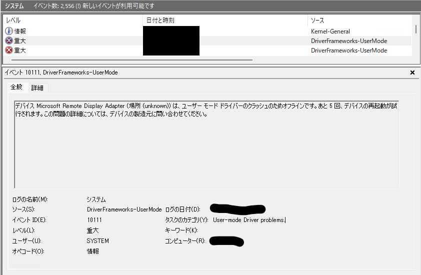
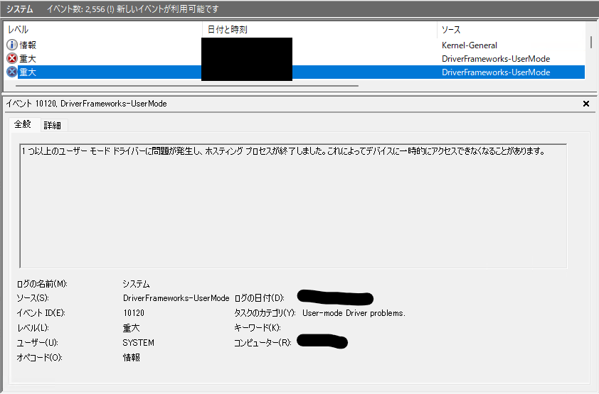
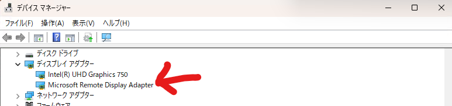
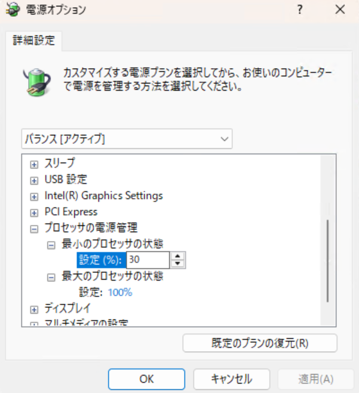

2025年6月ごろ？あたりから、Windows 11のPC環境へのリモートデスクトップ接続時に、「エラーコード 0x3」エラーメッセージと共にセッションが突然終了する事象が発生するようになりました。この切断ですが、リモートデスクトップ接続を開始してから短い場合だと30秒くらいでエラーを吐きつつ切断されてしまうため、かなりストレスです。いつまで経ってもエラーが出ず、正常に接続が継続されるケースもあるので、余計鬱陶しさに拍車がかかります。
というわけで、このエラーをどうにかすべく調査した備忘録です。結果的に自分の環境では接続状況が改善しましたが、他の環境で改善することを保証するものではないので、その点ご了承ください。
表示されるエラーは、下記のようなメッセージです。
[Window Title]
リモート デスクトップ接続
[Content]
リモート デスクトップ サービス セッションが終了しました。次のいずれかが原因と考えられます:
管理者がこのセッションを終了させました。
接続の確立中にエラーが発生しました。
ネットワークに問題が発生しました。
この問題を解決するためのヘルプ情報については、ヘルプとサポートで、リモート デスクトップに関するセクションを参照してください。
[^] 詳細の非表示(D) [OK]
[Expanded Information]
エラー コード: 0x3
拡張エラー コード: 0x11
タイムスタンプ (UTC): mm/dd/yy hh:mm:ss xx上記はアクセスしている側のPC、つまりアクセス元に表示されるエラーですが、アクセス先のPCにも内容は異なるもののエラーがイベントに記録されていました。


「Microsoft Remote Display Adapter」・・・？知らんぞ、そんなもの。調べてみると、デバイスマネージャーのディスプレイアダプター内に存在するデバイスでした。

コイツか・・・どうしてくれようか。
この場合では、グラフィックスドライバーの不具合と判断しました。上記のエラーメッセージにも「ユーザーモードドライバーのクラッシュのため」というメッセージが存在し、「デバイスに一時的にアクセスできない」という状況から、この「Microsoft Remote Display Adapter」というデバイスについて何らかの異常が発生している、と考えます。
リモートデスクトップは、アクセス先PCのグラフィックスドライバー（特にWDDM: Windows Display Driver Model）を利用して画面をレンダリングします。このドライバーに何らかの問題や不具合があると、セッションが不安定になり切断の原因となります。
なお、クラッシュしたあとでデバイスマネージャーを確認すると、「Microsoft Remote Display Adapter」が表示されていませんでした。これもドライバーに問題があることを示していると考えられます。
ドライバーが原因なら、基本的な対処はドライバーを更新するか修復するかです。つまり、アクセス先PCのグラフィックスドライバーが古い、または破損している可能性を考慮し、グラフィックスカードの製造元から最新のドライバーをダウンロードしてインストールを実行することで、エラーを解消するわけです。なお、今回ドライバーインストールを実施する対象は、リモートデスクトップ接続のアクセス先PCです。
今回はDell製のPCを使用していたため、Dellの公式サポートページからドライバーをダウンロードしました。製造元が異なる場合は、NVIDIA、AMD、Intelなど、各社の公式サイトからダウンロードしてください。
ここで、既存のドライバーがインストールしようとしているドライバーと同じバージョンだったとしても、既存のドライバーが破損している可能性を考慮して必要なドライバーはすべてインストールすることをオススメします。
また、インストーラーによっては「クリーンインストール」か「カスタムインストール」を選択できる場合があるかもしれませんが、この場合はクリーンインストールのほうがいいかもしれません。というのも、グラフィックスドライバーに含まれるもののうち何が原因でこのエラーが出ているかがはっきりしないため、特定のドライバーのみをピックアップしてインストールする「カスタムインストール」とは相性が悪いためです。
上記の方法に従いドライバーを再インストールしたところ、リモートデスクトップ接続が安定するようになりました。よかった。

ネット上の記事を参照すると、リモートデスクトップ接続が頻繁に切断される場合、Windowsの電源オプションを変更することで改善することがあるようです。「プロセットの電源管理」という設定で、「最小のプロセッサの状態」を30%程度にすると、安定する場合があるようです。
自分の場合は、ドライバーの再インストールで解決したため試していませんが、もしドライバーの再インストールで解決しない場合は試してみる価値はあるかもしれません。
このエラーについてネットの記事を探すと、「Microsoft Remote Display Adapterを無効にする」という処置を「この問題の解決方法」として書いている記事があります。
ところが、「Microsoft Remote Display Adapter」を無効にした場合、そもそもリモートデスクトップ接続ができなくなります。正確には、「リモートデスクトップ接続自体は成立するものの、画面が表示されず操作不可になる」です。リモートデスクトップ接続において、画面を共有するためのデバイスを無効にするんだから、さもありなんという感じではあります。
そのため、アクセス先のPCが手元にあり直接触って修復操作ができるなら問題ありませんが、そうではない場合はこの「無効にする」という処理はオススメしません。この記事のように、面倒ごとが増えるだけでした（1敗）。